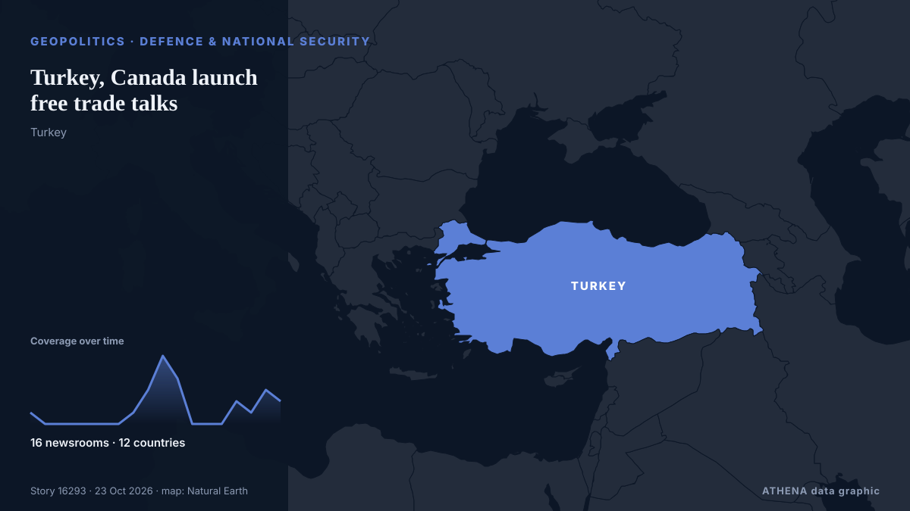

Turkey, Canada launch free trade talks

Canada and Turkey agreed Thursday to launch trade agreement as Canadian Prime Minister Mark Carney paid a landmark visit to Ankara, seeking to diversify Canada’s economic partnerships amid trade… from Turkish Minute
Reported independently by 16 outlets in 12 countries since 21 Oct, first by The Herald; coverage is fading. ATHENA rates the risk moderate (2.2/10), driven mainly by the severity of the harm described and its geographic and sector reach. Confidence is 88% (high), with 16 independent outlets corroborating it and an average source reliability of 76%.
Why it matters: Security and diplomatic developments can shift alliances, trade and markets well beyond the countries directly involved.
What changed: 22 new reports from 15 newsrooms in the 24 hours to 23 Oct.
At a glance
Selected, scored and written by ATHENA's published methodology. No editor intervenes in individual events. How this is produced ›
| 21 Oct 22:11 UTC | 1 |
|---|---|
| 22 Oct 00:11 UTC | 0 |
| 22 Oct 02:11 UTC | 0 |
| 22 Oct 04:11 UTC | 0 |
| 22 Oct 06:11 UTC | 0 |
| 22 Oct 08:11 UTC | 0 |
| 22 Oct 10:11 UTC | 0 |
| 22 Oct 12:11 UTC | 1 |
| 22 Oct 14:11 UTC | 3 |
| 22 Oct 16:11 UTC | 6 |
| 22 Oct 18:11 UTC | 4 |
| 22 Oct 20:11 UTC | 0 |
| 22 Oct 22:11 UTC | 0 |
| 23 Oct 00:11 UTC | 0 |
| 23 Oct 02:11 UTC | 2 |
| 23 Oct 04:11 UTC | 1 |
| 23 Oct 06:11 UTC | 3 |
| 23 Oct 08:11 UTC | 2 |
| 22 Oct 07:15 UTC | 0.0 |
|---|---|
| 22 Oct 19:55 UTC | 2.7 |
| 23 Oct 08:50 UTC | 2.2 |
Why these numbers
Importance
Risk
Confidence
The reporting — who reported it, and when
headline as published · opens the original- The Herald · ZimbabweKenya moves to deepen trade ties
- Hürriyet Daily News · TurkeyErdoğan meets Carney as Türkiye, Canada seek closer ties
- Al Jazeera English · QatarCarney, Erdogan launch ‘strong and resilient’ Canada-Turkiye partnership
- APA (English) · AzerbaijanCanada, Türkiye announce strategic partnership to deepen energy, defence and trade ties
- Arab News · Saudi ArabiaCanada opens free trade talks with Turkiye
- The New Arab · INTCanada opens free trade talks with Turkey
- Anadolu Agency (English) · TurkeyTürkiye, Canada to deepen trade, defense ties as Erdogan and Carney announce strategic partnership
- DW English · GermanyCanada's Mark Carney visits Turkey to boost trade ties
- to vima · GreeceCarney, Erdogan Unveil Trade and Defense Partnership in Ankara
- Channels TV · NigeriaCanada Opens Free Trade Talks With Turkey
- The National · United Arab EmiratesTurkey and Canada launch strategic partnership
- The Independent · United KingdomCanada and Turkey forge ‘strategic partnership’ in push to cut US trade reliance
- Türkiye Today · TurkeyTürkiye and Canada to open free trade talks before year-end, Erdogan says
- Türkiye Today · TurkeyCanada's PM Carney set to visit Türkiye for energy, trade, defense talks: Report
- Türkiye Today · TurkeyPresident Erdogan rolls out official ceremony for Canadian PM Carney in Ankara
- Turkish Minute · TurkeyTurkey, Canada launch free trade talks
- Hürriyet Daily News · TurkeyAnkara, Ottawa launch strategic partnership
- Xinhua (English) — page reader · ChinaTürkiye, Canada agree to elevate ties to strategic partnership
- The Jerusalem Post · IsraelCanada, Turkey sign 'strategic partnership' as part of Carney push to cut reliance on US
- Türkiye Today · TurkeyTürkiye and Canada sign defense, air and energy deals during Carney's visit
- Anadolu Agency (English) · TurkeyCanada ‘in need of Turkish expertise’ to strengthen its defenses: Premier
- Anadolu Agency (English) · TurkeyCarney rejects US election interference claims, says Canada will never be 51st state